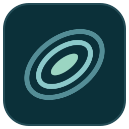

Import captures
Open a single PLY, SPLAT, or KSPLAT file, or load a folder as a frame sequence. Add more captures to the same scene.

GauRushGaussian splat editor for Windows
GauRush is a desktop editor for 3D Gaussian splats. Inspect animated captures, clean up stray splats from single splats or a splat sequence, and export edited frames or full sequences.
v0.29.0 · Windows x64
The workspace
Open a single splat or work through a sequence frame by frame.
Scrub the timeline and inspect a capture from different angles. Open PLY, SPLAT, and KSPLAT files or add multiple captures to a scene.
Open a single PLY, SPLAT, or KSPLAT file, or load a folder as a frame sequence. Add more captures to the same scene.
Orbit, pan, and zoom around a capture. Switch between perspective and orthographic views or jump to an aligned view with the numpad.
Scrub to a specific frame, set playback speed and range, and loop a section to check motion.
Draw a lasso in the viewport and delete the selected splats in the current frame.
Use boxes, spheres, cylinders, cones, or an extruded lasso. Preview the crop and toggle each volume in the layer list.
Move, rotate, and scale captures and crop volumes. Multi-select, duplicate, and parent objects in the scene hierarchy.
Keyframe position, rotation, and size. Retime keys on the timeline and choose how the crop moves between them.
Adjust splat size, smoothness, opacity, and background color. Use Auto quality to keep navigation responsive in larger scenes.
Keep edits, animation, and camera settings in a GauRush project. The project links to source captures so you can relink them if they move.
Review the export preview, then save the current frame or the full edited sequence to a folder.
v0.29.0 · Windows x64 · 92 MB
Unsigned Windows installer